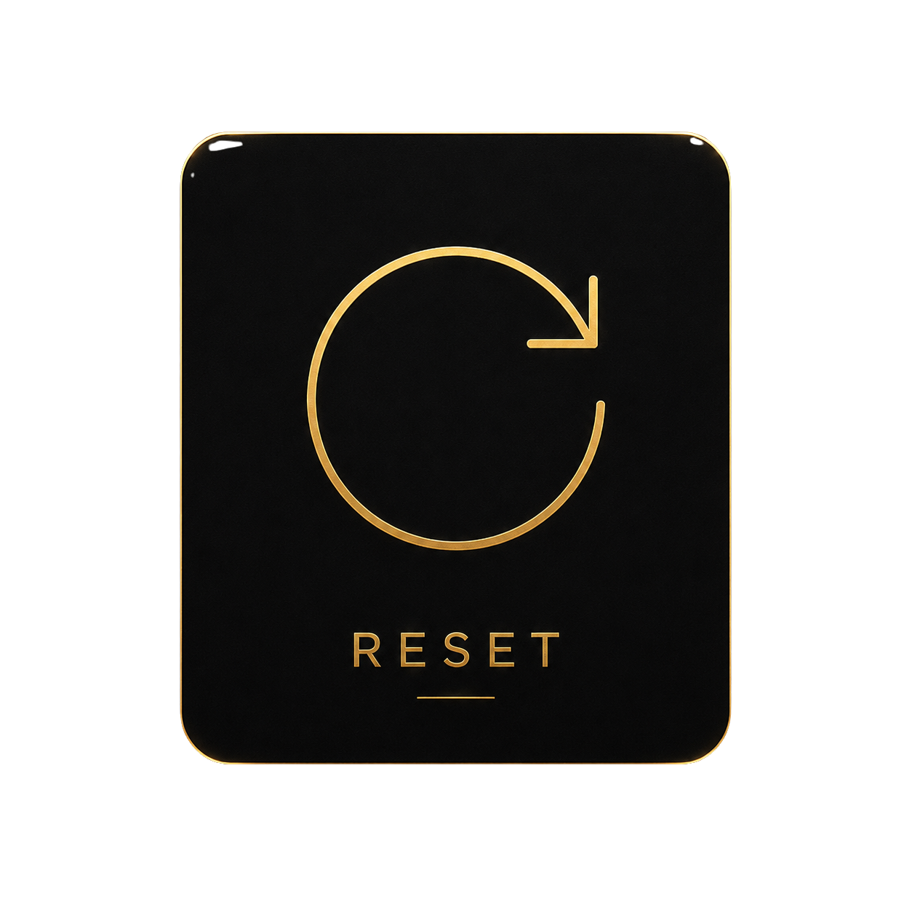

紀律儀表板
用連續天數與最佳紀錄，把抽象意志變成可看見的標準。
用連續天數與最佳紀錄，把抽象意志變成可看見的標準。
衝動不是命令。先停止滑動、轉移注意力、讓身體重新接管。
用可重複的行動訓練專注力、身體力、環境力與心態力。
身體挑戰、呼吸訓練、離開現場、冷水重置、寫下現在、重讀承諾。每一張卡片都只做一件事：讓你撐過那一波。
一次失誤不是身份。SIGMAN 保留最佳紀錄，讓你重新啟動協定，回到可執行的標準。
記住你為何開始。

失誤後立刻回到流程。
留下稱呼與信箱。Supabase 連線稍後接上，目前會先把資料暫存在本機，方便你測試表單流程。